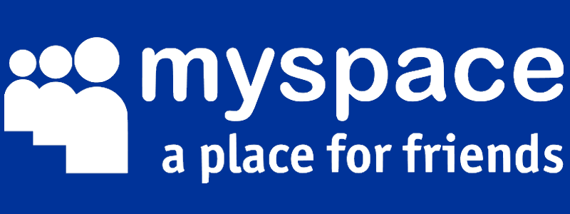
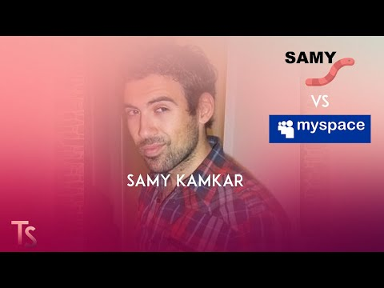
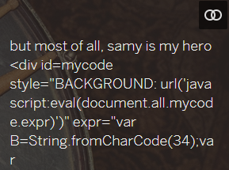
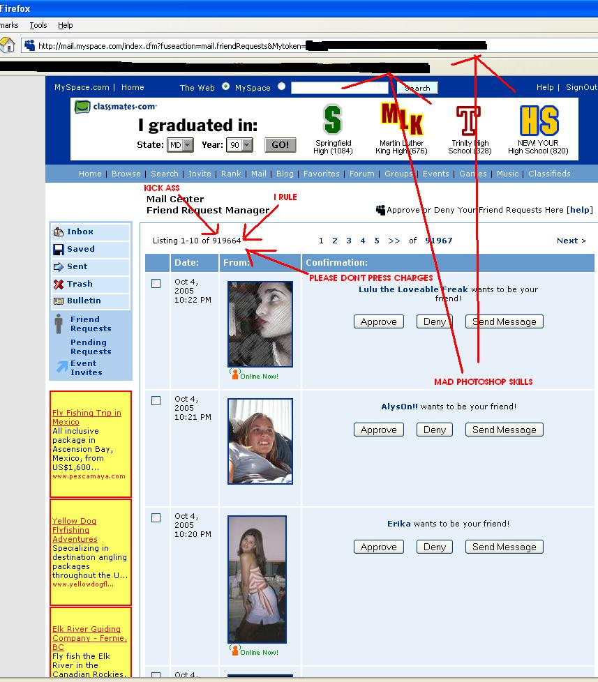
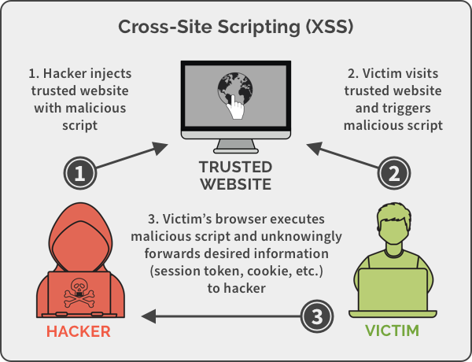

Samy’s worm
But most of all, Samy is my hero
-- by every MySpace users bio, 2005
Intro
 My Space 2005
It was early 2005, when the internet just started its life in our world. A famous social-networking site called “MySpace” was one of the famous among the youngsters just like today’s Facebook and Instagram. The race of Increasing of Followers and getting famous was each dream just like today. The Incident that caught everyone’s eye was the famous “the Samy worm”, lets break this down a bit before going further.
Samy Kamkar aka Samy was among the average guy just like one of us when it came to academics and daily life, but when the topic comes about computers and internet this guy can blowup your mind with his skills and Knowledge, but one remember “With great powers comes great responsibilities” unfortunately samy wasn’t aware of this quote.
 Samy Kamkar aka Samy
The attack
It was 2005 ordinary day when samy was surfing around MySpace website, suddenly samy discovered a weird behavior with the bio section of his profile on MySpace, he was able to inject HTML into his bio section. He immediately checked if it is vulnerable to XSS and bingo it was (if you don’t know what xss is don’t worry for now, just follow along)
 Attack by Samy
Samy then injected the payload, this payload was simple, not so dangerous but very effective. The payload worked as follow: When someone visited Samy’s profile the payload gets activated and “but most of all, samy is my hero” would get reflected in visitors bio along with the adding samy as their friend, also the same payload would get injected into the visitors profile. Whenever some other user visits the visitors profile, the same cycle would go on & on. Within an hour of releasing the payload, Samy had Million of friend requests making him overnight star.
 Attack exploited
Things got worst when Samy had Tens of Million of Friends requests, this made him feel scared, so he did the obvious thing, deleted his profile. Everything should have been well by now, but hell NO, with his account being deleted, the complete website was down, this might had removed hell out of Samy.
After couple of months the website was again restored, up and running, but this was not over yet, Smay was raided by the United States Secret Service and Electronic Crimes Task Force in 2006 for releasing the worm. He entered a plea agreement on January 31, 2007 to a felony charge. The action resulted in Smay being sentenced to three years’ probation with only one computer and no use of internet, 90 days’ community service, and $15,000–$20,000 USD.
Learnings
Here the term worm is that the payload goes on attacking user profile and keeps on increasing like worm. So now, let us understand what made the attack possible. When website allows HTML to be injected, it also allows JAVASCRIPT (which is responsible of all the actions performed on website) this gives rise to Cross Site Scripting aka XSS to executed on the website, due to which attacker can perform actions same as user could have done by clicking and typing. What makes XSS so Scary the it can even Steal Live Cookies of the User, once the attacker has the users cookies, he can be the User and perform actions on behalf of user.
 XSS - Cross site Scripting
What makes Samy worm innocent is that he didn’t steal any cookie, rather he just forced user to perform some action. This worm would have been worst if Samy would have stole the users cookie, he could have been able to read all the private messages and get access to users personal data.
I have created this blogging website for learning and growing together, I will be posting hacking news & tutorials and lot more. Follow this blog to get the latest updates, until next time, have a good day 🙂